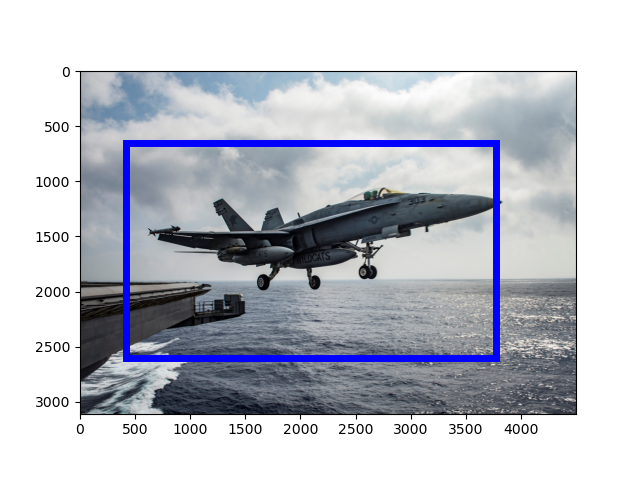
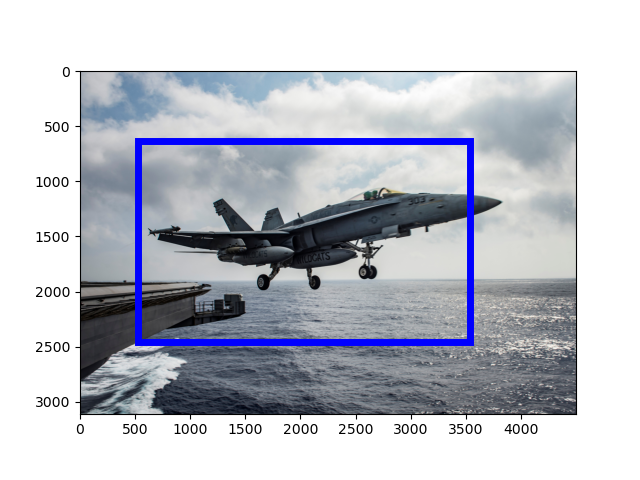
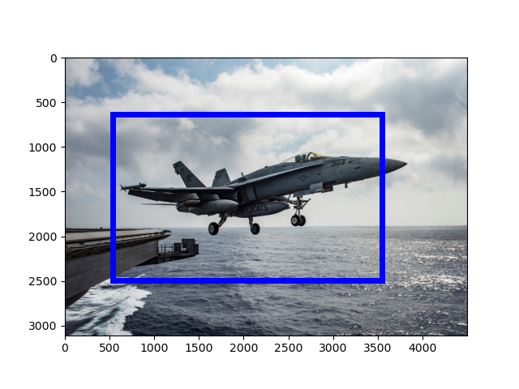

[Raw Text]: FILE - A U.S. Navy F/A-18E Super Hornet launches from the flight deck of the aircraft carrier USS Dwight D. Eisenhower in the Mediterranean Sea, June 28, 2016.
======================================================================
Mention: http://www.isi.edu/gaia/entities/uiuc/VOA_EN_NW_2017_06_19_3907026_0/EN_Entity_EDL_0000338
---- VOA_EN_NW_2017_06_19_3907026_0:94-117 FILE - A U . S . Navy F / A - 18E Super Hornet launches from the flight deck of the aircraft carrier USS Dwight D . Eisenhower in the Mediterranean Sea , June 28 , 2016 .
---- VOA_EN_NW_2017_06_19_3907026_0:77-92 FILE - A U . S . Navy F / A - 18E Super Hornet launches from the flight deck of the aircraft carrier USS Dwight D . Eisenhower in the Mediterranean Sea , June 28 , 2016 .
Image:
GroundingConfidence: http://www.columbia.edu/AIDA/DVMM/Entities/GroundingBox/RUN00006/JPG/VOA_EN_NW_2017_06_19_3907026_0/1, 0.529807

Event:
======================================================================
Mention: http://www.isi.edu/gaia/entities/uiuc/VOA_EN_NW_2017_06_19_3907026_0/EN_Entity_EDL_0000337
---- VOA_EN_NW_2017_06_19_3907026_0:19-25 FILE - A U . S . Navy F / A - 18E Super Hornet launches from the flight deck of the aircraft carrier USS Dwight D . Eisenhower in the Mediterranean Sea , June 28 , 2016 .
---- VOA_EN_NW_2017_06_19_3907026_0:33-38 FILE - A U . S . Navy F / A - 18E Super Hornet launches from the flight deck of the aircraft carrier USS Dwight D . Eisenhower in the Mediterranean Sea , June 28 , 2016 .
Image:
GroundingConfidence: http://www.columbia.edu/AIDA/DVMM/Entities/GroundingBox/RUN00006/JPG/VOA_EN_NW_2017_06_19_3907026_0/2, 0.8517966

Event:
======================================================================
Mention: http://www.isi.edu/gaia/entities/uiuc/VOA_EN_NW_2017_06_19_3907026_0/EN_Entity_EDL_0000339
---- VOA_EN_NW_2017_06_19_3907026_0:65-68 FILE - A U . S . Navy F / A - 18E Super Hornet launches from the flight deck of the aircraft carrier USS Dwight D . Eisenhower in the Mediterranean Sea , June 28 , 2016 .
---- VOA_EN_NW_2017_06_19_3907026_0:58-63 FILE - A U . S . Navy F / A - 18E Super Hornet launches from the flight deck of the aircraft carrier USS Dwight D . Eisenhower in the Mediterranean Sea , June 28 , 2016 .
Image:
GroundingConfidence: http://www.columbia.edu/AIDA/DVMM/Entities/GroundingBox/RUN00006/JPG/VOA_EN_NW_2017_06_19_3907026_0/3, 0.7033588

Event:
======================================================================